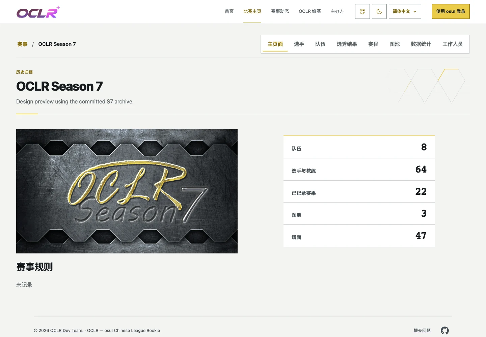

圖片來自 main 515be9c 上的 S7 實作 182075a 實際頁面，使用 S7 Graphite Arena 的 SSR 外觀偏好與打包樣式。拉絲銀色／深鋼金屬、具倒角與內凹槽的六角金屬嵌件，配上蜂巢線稿及競技黃細線；保留完整原主視覺。
515be9c
182075a
設計規格與重現步驟 · 截圖與檢查紀錄 · Issue #198
金屬嵌件局部：Light · Dark（實際頁面 2× 截圖）
